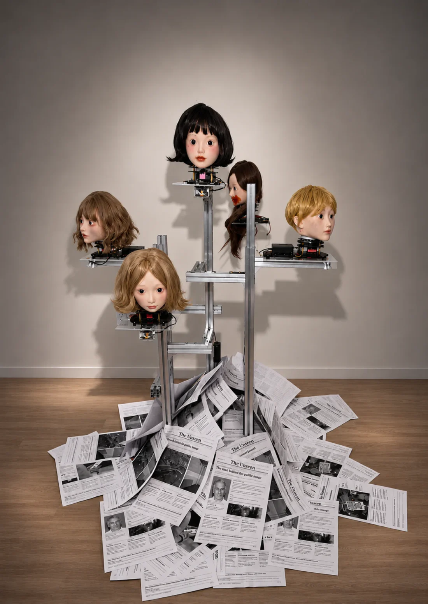

Project 04 / Product design · HCI · UI
AfterDream
A Bedside Companion for Remembering Dreams
AfterDream captures fading dream fragments through bedside voice input. AI helps shape remembered details into short, editable dream scenes, while the original recording stays intact. A private archive makes dreams easy to revisit and reflect on.
- Device
- Cloud-shaped recorder · One-touch capture
- Capture
- Bedside voice input
- Scenes
- AI-assisted, always editable
- App
- Private dream archive
Voice capture & sync
A gentle waking ritual. Describe scenes, people and feelings in your own words. Incomplete memories are welcome.
Revisit & reflect
Keep the voice. Review the scene. Make it your own. Find saved dreams by mood, theme or keyword.
You stay in control
AI scenes are editable interpretations, guided by your own memories. The original recording always stays intact.
The app
A dream, revisited.
Revisit scenes shaped by your own words. The Dream Archive lets you record and revisit your inner world; Discover and Insights let you explore shared dreams and understand your patterns.
